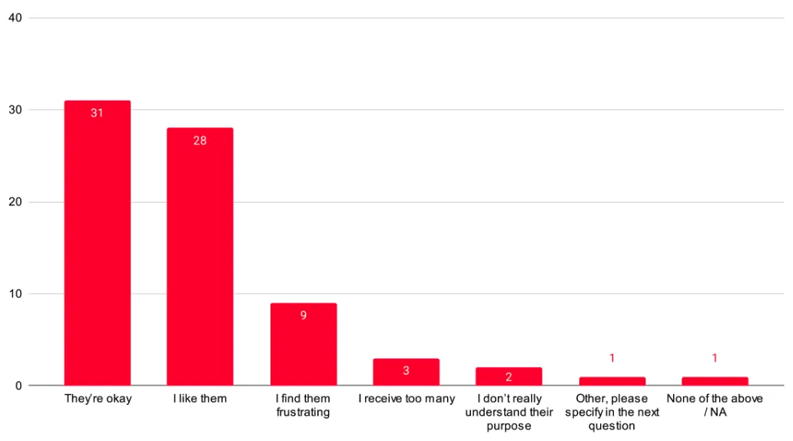
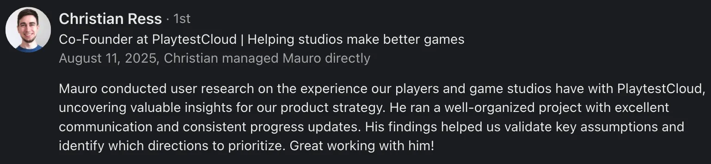

TL;DR
I partnered with PlaytestCloud to reimagine their playtesting platform through comprehensive user research and design. Surveyed 168 participants, conducted user testing, and created mobile-first solutions, including systems that increase user engagement. The project resulted in actionable recommendations for both playtesters and game developers, with several features now implemented or planned for rollout.
Due to NDA constraints, specific implementation details, mockups and metrics cannot be shared.
The Challenge
PlaytestCloud connects game developers with players for remote user research, but faced UX challenges on both sides of their marketplace. Game developers struggled with participant targeting and screener management, while playtesters encountered confusing onboarding processes and didn't understand the platform's value proposition.
Key pain points included:
- Only 79% of playtesters found screeners acceptable, with many not understanding their purpose (see chart)
- Technical difficulties with Apple’s screen broadcasting caused universal user struggles
- Current onboarding led to playtester confusion about earning opportunities and platform mechanics

My Approach
Working in close collaboration with PlaytestCloud's team from January to August 2025, I employed a comprehensive research and design methodology:
Research Phase (Multi-method approach)
- Analysis of the user research platform market
- Client interviews with PlaytestCloud customers
- Two comprehensive surveys with 168 total participants
- User testing sessions with 6 participants via Respondent
- Analysis of 60 app store reviews and existing internal reports
Design Phase (Mobile-first solutions)
- Sketched and wireframed a new onboarding experience
- Created interactive prototypes for both the tester and client interfaces
- Developed new reward systems and implemented a new UX writing strategy
- Designed enhanced profile management and screener systems
Validation Phase
- User-tested prototypes with new and existing PlaytestCloud users
- Conducted follow-up client interviews to validate business features
- Refined designs based on feedback and technical constraints
Key Challenges Overcome
Testing Mobile Designs on Desktop
Due to practical limitations, I had to test mobile-optimized designs on desktop computers, requiring careful consideration of how this might affect user responses and feedback quality.
Balancing Dual User Groups
Designing for both game developers and playtesters required understanding different needs, workflows, and technical requirements while maintaining platform cohesion.
Solutions & Impact
Due to NDA constraints, the solutions and impact of this project can’t be shared publicly. However, I'd be happy to connect and share my approach, process, and learnings.
Deliverables
Research Artifacts
- User needs analysis
- Competitor analysis report
- User flow mapping (current vs. ideal state)
- Survey findings presentations
- User testing reports
- Client interview reports
- Heuristic evaluations
Design Artifacts
- Sketches, wireframes, mockups and interactive lofi prototypes
- UX writing guidelines and content strategy
- Screener question pool system design
Results & Client Feedback

The project delivered evidence-based guidance that strengthened PlaytestCloud's competitive position in the specialized Games User Research market while improving the experience for both game developers and playtesters.